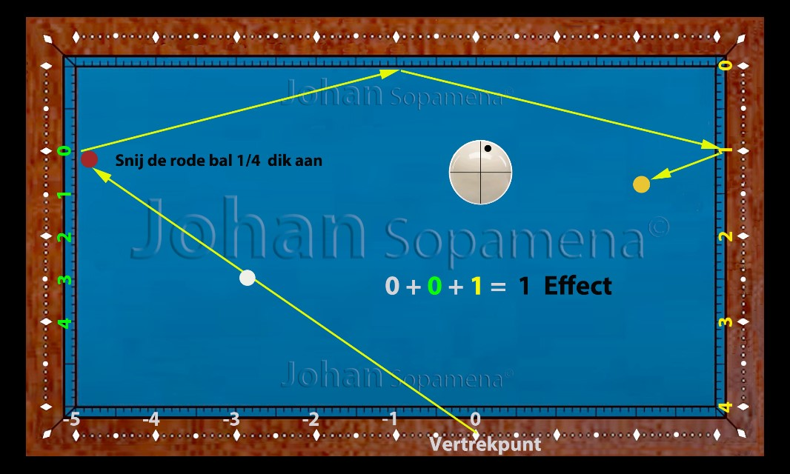

Chapter 2: Cut shot system short, long to short rail (part 01)
2.1 Introduction
The Cut Shot System (short–long–short) is one of the most used patterns in the three‑cushion game. This system is applied when the cue ball must be struck with a cut to reach the third rail via the short rail, then the long rail, and then the short rail again.
In this chapter we cover the basic principles of this system, the reference points, the influence of spin and speed, and the typical error margins players must learn to recognize.
2.2 Basic principle of the Cut Shot System
The system works based on a fixed ratio between:
- the thickness of the object ball hit (cut)
- the amount of spin
- the position of the cue ball on the short rail
- the arrival line on the third rail
The player must find a balance between ball contact and spin to create the correct angle. Too thick a hit gives too little angle, too thin a hit gives too much angle.
2.3 Reference points and counts
For this system, fixed reference points are used on both the short and the long rail. The player first determines the departure point on the short rail, then the desired arrival point on the third rail.
The basic rule reads:
➤ Aim point = (Departure × 2) – Arrival
This formula is a guideline and must be corrected based on:
- amount of spin (1, 2 or 3)
- table condition (new cloth, old cloth)
- ball contact (thickness of the cut)
2.4 Explanation and Examples
In the figures below, typical situations are shown in which the Cut Shot System short–long–short can be optimally applied. The running lines are schematically shown and display the ideal route of the cue ball.
The player must focus on:
- the thickness of the object ball
- the amount of spin
- the speed of the cue ball
- the position of the second ball
Small variations in spin or thickness can cause large differences in the final arrival line. Therefore, this system is ideal to train feel and precision.
Figure 01: Cut shot short–long–short base position without spin
 Figure 01: Cut shot short–long–short base position without spin
Figure 01: Cut shot short–long–short base position without spin
Figure 02: Cut shot system short, long to short rail with 1 spin
 Figure 02: Cut shot system short, long to short rail with 1 spinFigure 03: Cut shot system short, long to short rail with 2 spin
 Figure 03: Cut shot system short, long to short rail with 2 spin
Figure 03: Cut shot system short, long to short rail with 2 spin
Figure 04: Cut shot system short, long to short rail with 2 spin
 Figure 04: Cut shot system short, long to short rail with 2 spin
Figure 04: Cut shot system short, long to short rail with 2 spin